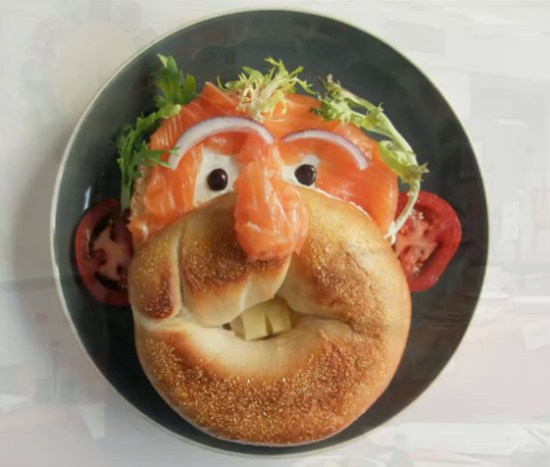

- Пицца
- Суши
- Ролы
- Сеты
- Сет драконов
- Императорский
- Вода
- Газированая
- Негазированая

Индекс Биг Мака
Индекс Биг Мака - это стоимость гамбургера в сети Мак Дональдс. Биг Макс содержит мясо, мясо, овощи, сыр, хлеб и другие продукты.
В его стоимость так же входит аренда помещения и оборудовния, рабочая сила и многие другие факторы.
Если цена Биг Мака низкая, то можно сказать, что цены в стране низкие, если высокая то и цены относительно высокие.
Иследования проводяться журналом «The Economist ».
Индекс Биг Мака в разных странах
| Год |
Россия |
Великобритания |
США |
Израиль |
| 2012 |
2.62 |
4.5 |
4.33 |
3.99 |
| 2013 |
2.64 |
4.51 |
2.9 |
4.15 |
| 2014 |
2.6 |
4.66 |
4.68 |
4.18 |
Интересные факты :
- По мнению экспертов журнала «The Economist » российский рубль, наряду с валютами таких стран,как Украина, Египет, Филиппины, Аргентина, Гонконг, Индонезия,
Тайланд, Малайзия, недооценён примерно на 50%.
- В 2015 году самым дешевым Биг-Маком можно ″ полакомиться ″ в Венесуэле - за 0,67 доллара(недооценка на 86%), потом идет Украина 1,55(-67,7%), а за ними Индия,
где цена на этот бутерброд 1,83 доллара (-61,7%).
- Самый дорогой Биг-Мак можно купить в Швейцарии -за 6,83 доллара(+42,4%), затем идут Норвегия - 5,65$ (+17,9 %), Швеция - 5,13$ (+7%) и Дания 5,08$(+6%).